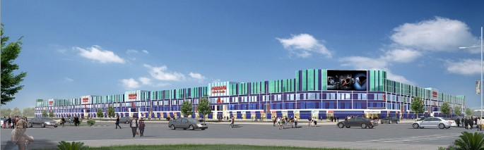

哈尔滨华南城由华南城控股有限公司投资开发。华南城控股有限公司（简称华南城）2002年5月在香港注册成立，2009年9月在香港联合交易所上市（股份代号：1668HK），是中国“综合商贸物流中心”规划、开发、建设和运营的领航者。华南城业务遍布中国，迄今开发并运营着深圳、南宁、南昌、西安、哈尔滨、郑州、合肥、重庆等项目，是集十二大产业门类为一体的工业原料及商品交易中心、现代化综合商贸物流基地和制造业高端集成服务平台。
哈尔滨华南城2011年10月落户哈尔滨市哈东物流产业带道外产业园区，位于道外区团结镇，四环高速东侧，规划长江路从片区中部东西向穿越。作为黑龙江省政府重点招商引资项目，哈尔滨华南城规划总建筑面积1200万平方米，计划总投资额超过200亿元人民币。
哈尔滨华南城2011年10月落户哈尔滨市哈东物流产业带道外产业园区，位于道外区团结镇，四环高速东侧，规划长江路从片区中部东西向穿越。作为黑龙江省政府重点招商引资项目，哈尔滨华南城规划总建筑面积1200万平方米，计划总投资额超过200亿元人民币。
哈尔滨华南城分为专业市场商贸展示区、综合配套商业服务区、仓储物流配送区、配套住宅区等四部分。旨在打造一个集专业批发市场集群、会展中心、金融中心、总部办公、电子商务、全球物流、产品包装加工、仓储服务、生产服务、住宅、学校、医院等配套于一体的现代化综合商贸物流集散地。
专业市场商贸展示区主要为纺织服装、化工、机电、建材装修及装饰、小商品、农用机械设备及配件、副食品、汽车及汽车用品、医药及保健品、五金、皮革皮具、电子等十二大行业门类进行展示交易。综合配套商业服务区、仓储物流配送区将提供物流、信息、电子商务、会展、体验检测、品牌推广、研发、设计、贸易、培训、金融、通讯等各种生产性服务。配套住宅区将为交易市场的经营户、员工、采购商、供货商及其他从业人员与客户，提供全面的生活服务配套。
哈尔滨华南城打造的园区，不仅仅停留在“生活社区”的层面上，更是一座集完整产业链、产业配套、商业配套、生活配套于一体的、可容纳30万人群工作、生活的超级大城。哈尔滨华南城将整合所有配套、资源缩短市场培育期，加速市场繁荣，完美担当市区内专业市场拆迁主承接地的角色，助力哈尔滨新一轮商贸物流产业的迅速崛起！
整体项目划分为四期完成，预计建设周期约五至八年，预计将于2020年全面投入使用。首期开发面积超过400万平方米，旨在打造以交易市场为核心的超大规模一站式、全业态现代综合商贸物流市场群。涵盖商贸交易广场、品牌馆、华盛奥特莱斯、香港皮草城、好百年家居广场、品牌会展中心、对俄贸易中心及酒店办公等多种业态，全面覆盖商贸物流产业上、下游，打通产业市场大动脉。
目前，一期已建成1号2号交易广场和精品A 、B、 C区，其中1号交易广场华盛奥特莱斯、2号交易广场香港皮草城，将于今年9月份开业，预期将会吸引百万人次的客流量。
哈尔滨•华南城作为对俄贸易的门户企业和窗口单位，特设对俄贸易广场，以“引进来、走出去”的战略眼光，引入俄罗斯各商贸行业领军商家，集名优产品的生产与销售、集散批发与出口、国内国际间的经贸洽谈与商品展销为一体，真正成为开拓俄罗斯市场的桥头堡、对俄贸易战略升级的前沿阵地。黑龙江对俄经贸总部中俄贸易大厦、彼得堡大酒店已于2013年6月16日，在哈尔滨华南城举行隆重的奠基仪式，这是黑龙江首席对俄经贸总部。其中中俄贸易大厦建筑面积约为4.95万平方米，共22层，建筑高度约为77米；彼得堡大酒店建筑面积约为4.53万平方米，共19层，建筑高度约为68米，预计2015年投入使用。中俄贸易大厦建成后，将承载着搭建全国对俄贸易的使命，加快境内外商贸物流对接，降低两地采购成本和物流成本，让华南城品牌优质商品直接进入俄罗斯市场，俄罗斯商家、商务机构直接作为经济总部，促进黑龙江省沿边开放战略升级。未来，哈尔滨华南城将建立东北亚各国家驻华南城贸易办事处。利用哈尔滨华南城商贸物流、电子商务、会议展览等方面的强大优势，首创东北亚产品对华南城业户，华南城产品对东北亚市场的国际贸易新模式。
哈尔滨华南城项目全面建成后，预计可引进商家10万户，创造30万个就业岗位，实现年销售收入2000亿元，实现年税收30亿元，将拉动哈尔滨GDP增长7个百分点。推进产业升级，加快经济转型现代商贸业的发展，将进一步推动哈尔滨产业格局向多元化转变，实现在更高层次上的结构转型、富民强区。产业带动区域，助推哈尔滨由资源经济向商贸产业经济全面跨越。 哈尔滨华南城的建设及运营将为哈尔滨经济培植新的增长点，提升哈尔滨城市品位、拉动区域经济起到积极的作用。它将为哈尔滨吸引具有核心竞争力、可持续发展的产业提供重要的配套支持，在东北亚构建新的欧亚大陆桥，书写北国冰城文明与繁荣的辉煌新篇章。